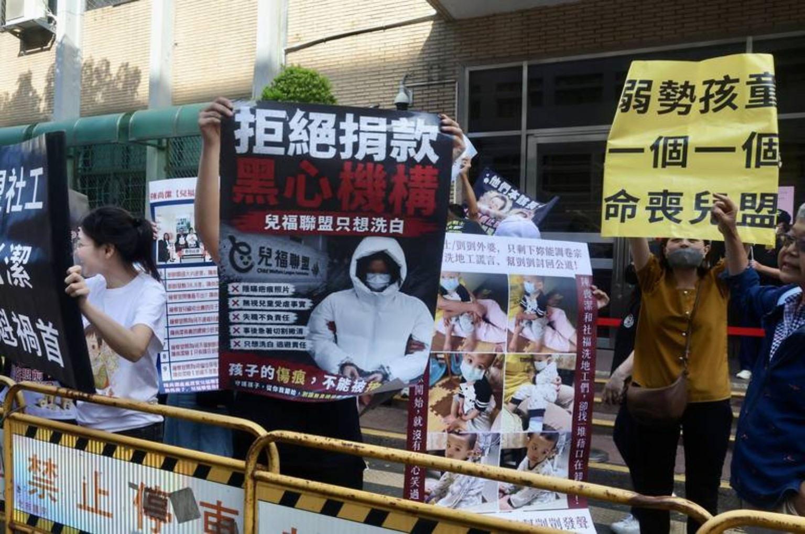
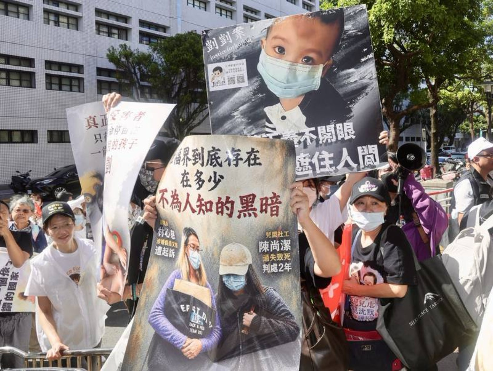

COURT WATCH · 2026 / 09 / 16
二审首度开庭日：高院外的护童诉求
剀剀案社工陈尚洁被控过失致死案于9月16日在台湾高等法院首度进行二审开庭。护童行动联盟在法院外表达立场，现场有人高喊「重判」并举牌，诉求儿少保护责任应被正视。
可核对事实
中央社当日两则图说均记载，案件在台湾高等法院开庭审理，护童行动联盟号召群众在法院外抗议、举牌并提出诉求。现场行动与口号不等同法院对责任、证据或量刑的最终认定。
中央社当日两则图说均记载，案件在台湾高等法院开庭审理，护童行动联盟号召群众在法院外抗议、举牌并提出诉求。现场行动与口号不等同法院对责任、证据或量刑的最终认定。
现场照片


来源与图说
中央通讯社｜护童行动联盟高院外抗议（1）
中央社记者张皓安摄，115年9月16日。图说记载：二审首度开庭，现场高喊「重判」等口号。
中央通讯社｜护童行动联盟高院外抗议（2）
中央社记者张皓安摄，115年9月16日。图说记载：群众在法院外高举海报等表达立场诉求。
案件后续程序与裁判均以法院公开资讯为准。